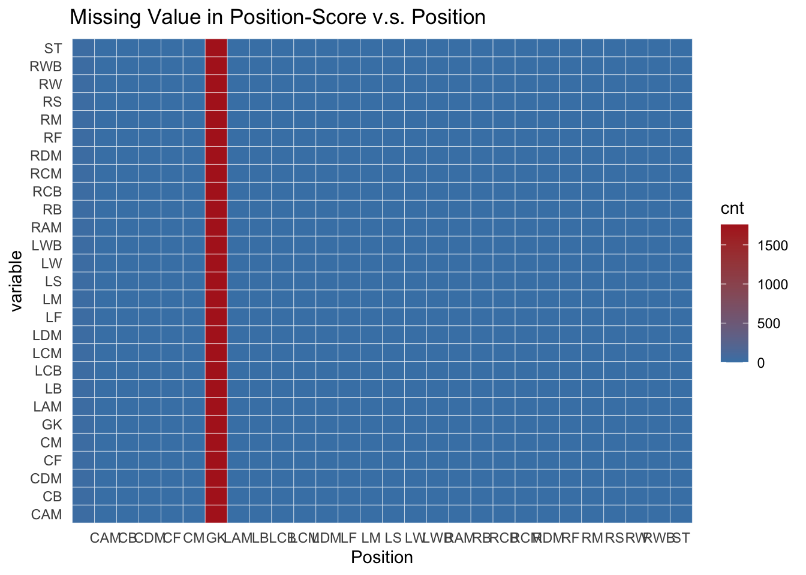

Chapter 4 Missing values
4.1 Count NA
## Release.Clause LS ST
## 2045 1784 1784
## RS LW LF
## 1784 1784 1784
## CF RF RW
## 1784 1784 1784
## LAM CAM RAM
## 1784 1784 1784
## LM LCM CM
## 1784 1784 1784
## RCM RM LWB
## 1784 1784 1784
## LDM CDM RDM
## 1784 1784 1784
## RWB LB LCB
## 1784 1784 1784
## CB RCB RB
## 1784 1784 1784
## GK Defensive.Awareness Composure
## 1784 1692 652
## Stamina Sprint.Speed Agility
## 257 244 226
## Vision Acceleration Short.Passing
## 225 221 220
## Ball.Control Reactions Finishing
## 214 210 209
## Jumping Strength Dribbling
## 204 198 183
## Balance Sliding.Tackle Positioning
## 177 171 166
## Volleys Long.Shots Crossing
## 163 154 153
## Interceptions Long.Passing Heading.Accuracy
## 150 138 133
## Standing.Tackle Curve Shot.Power
## 130 120 116
## Aggression FK.Accuracy Penalties
## 95 44 36
## GK.Reflexes GK.Positioning GK.Handling
## 36 34 32
## GK.Kicking GK.Diving Jersey.Number
## 32 30 25
## X V1 ID
## 0 0 0
## Name Age Photo
## 0 0 0
## Nationality Flag Overall
## 0 0 0
## Potential Club Club.Logo
## 0 0 0
## Value Wage Special
## 0 0 0
## Preferred.Foot Weak.Foot Skill.Moves
## 0 0 0
## International.Reputation Work.Rate work.rate1
## 0 0 0
## work.rate2 Body.Type Real.Face
## 0 0 0
## Position Joined Contract.Valid.Until
## 0 0 0
## Height Weight Likes
## 0 0 0
## Dislikes Following
## 0 0There are 63 variables that have missing value and 32 variables that have no missing value. Among the variables which contain NA, Release.Clause has the largest number of missing value which count up to 2045. While Jersey.Number has only 25 missing values which is the lowest.
4.2 Overall visualizing

By plotting the visna graph, there seems no uniform missing value patterns cross all variables. However, there are some missing value cluster that worth investigating.
Above all, we can see that the most common missing value pattern is NA in all Position-Score related variables (LS, ST, RS, … , GK). Also, there might be some missing value patterns in Skill-Score related variables (Defensive.Awareness, Composure, …, GK.Diving) but are less explicit. Finally, there are no missing value pattern when it comes to Release.Clause and Jersey.Number.
Since both Position-Score and Skill-Score will be affected by the players’ position, we will further figure out whether there are certain missing value patterns against the Position variable.
4.3 Position-Score Pattern

Just as we guessed, all the missing value that related to position-score are found in those players who play the role of GK (Goal Keeper). This makes sense due to the goal keeper always stay near the goal.
4.4 Skill-Score Pattern

According to the missing value heatmap of Skill-Score variables, Players that play the role of ST have the largest number of missing values. And Composure seems to have missing values cross all positions. Surprisingly, when it comes to the GK skills (GK.Reflexes, GK.Positioning, GK.Kicking, GK.Handing, GK.Diving), most of the missing values are lied in GK players. Finally, there are no other patterns can be found in this graph.